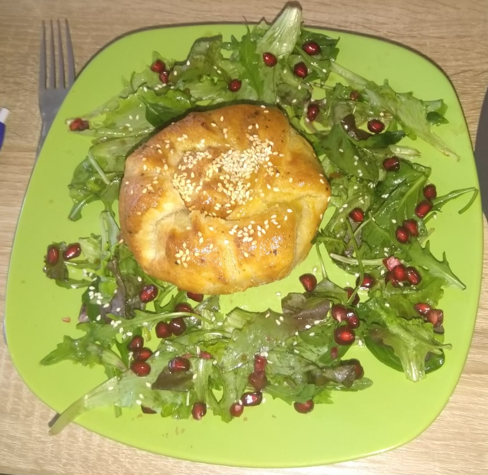
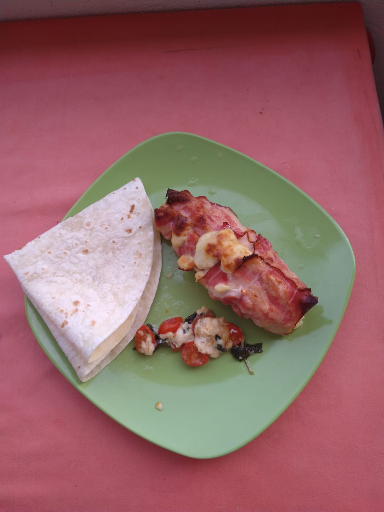
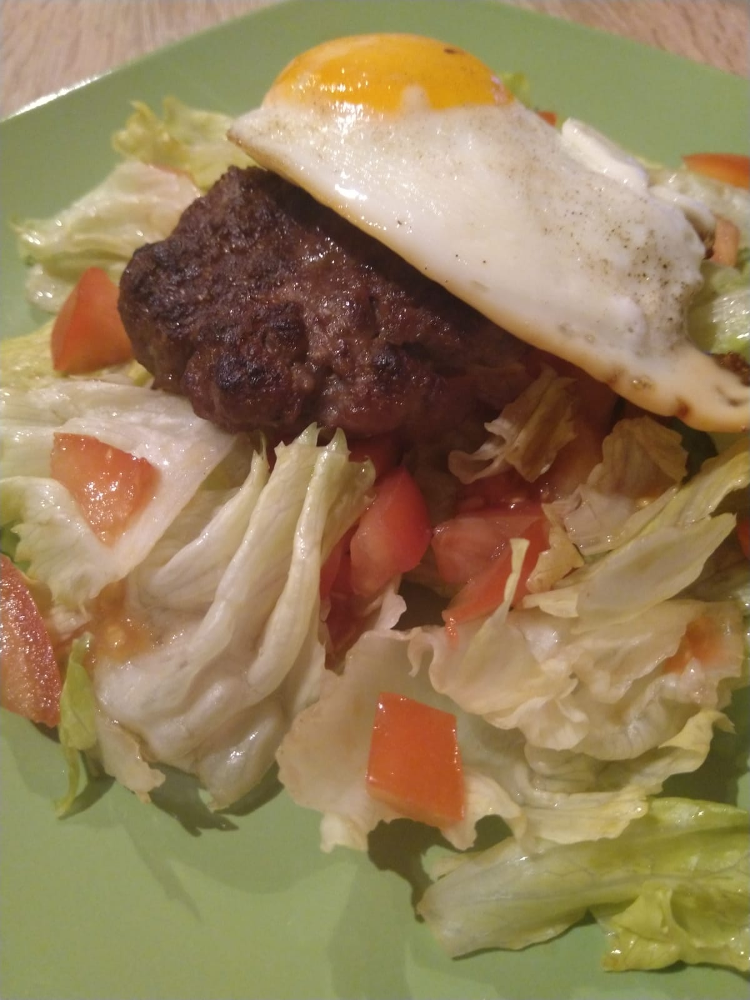
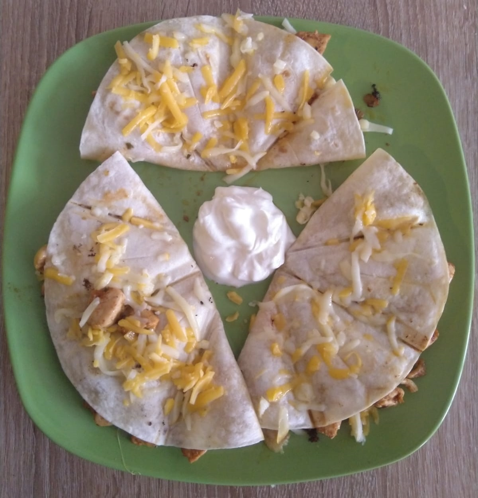
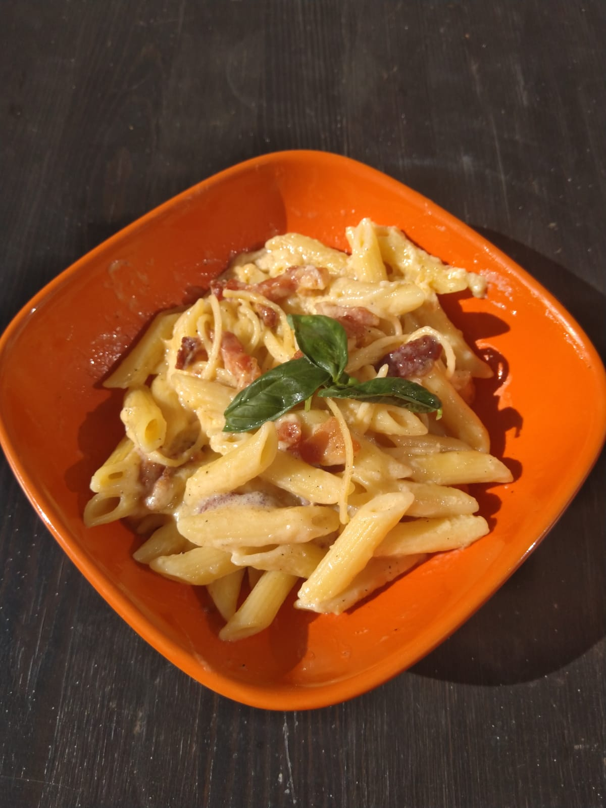

Eidam nastrouhat, rajčata, mozzarelu a prsty nakrájet na kostičky.
Cibuli, špekáčky a větší brambory nakrájet na kostky (cibuli na malé kostičky). Špekáčky dát osmahnout na pánvičku. Do hrnce dát rozpálit tuk (olej, ale ještě lépe sádlo). Cibulku dát osmahnout dozlatova, jakmile začne zlatovatět, tak zasypat půlkou papriky. Promíchat a počkat až to trochu zpění. Pak zalít vodou a přidat brambory a veškeré koření. Stroužky česneku a dvě menší brambory nastrouhat najemno do vody. Jakmile se voda uvede k varu, přidat špekáčky a nechat alespoň hodinu vařit (průběžně míchat).
TIP: Nejlépe guláš chutná poté, co se nechá přes noc odležet v chladu.
Osmahnout kousky masa a oddělat z pánve. Nudle dát na 30 minut odmočit do teplé vody. Zeleninu (mrkev, cibule, paprika, zelí) nakrájet na nudličky a osmahnout na pánvi, ale tak aby zůstalo vše křupavé. Přidat maso, nudle a vodu (ne moc). Ochutit kořením, sójovkou a UME octem, solí dle chuti. Jakmile jsou nudle hotové, sundat z plotny a přimíchat klíčky.
Cibuli, česnek a klobásu nakrájet na kostičky a dát osmahnout. Přilít protlak, trochu vína a koření. Po další chvíli přidat fazole a ještě chvilku nechat na mírném plameni probublat.
Maso z jedné strany osolit a opepřit a druhou stranou (tou s kůží) dát na 2-3 minuty osmažit na pánev. Nakrájet rajčata na čtvrtiny a olivy na poloviny. Maso přendat do pekáčku, přisypat olivy, rajčata, bazalkové listy a přelít olivovým olejem. Dát péct do trouby na 15 minut na 200°C.
TIP: Jako příloha se hodí kuskus

Pita (6 placek)
Marináda
Ostatní
Cibuli do marinády nakrájet na půlkolečka, promíchat koření, sůl, maso a cibuli, zalít olejem a nechat dva dny marinovat v chladném prostředí.
Na pity smíchat suché přísady, přilít mléko, olej a michát dokud nevznikne vláčné těsto, rozdělit na 6 dílků, a vyválet placky. Placky opékat na suché pánvi a po sundání potřít máslem.
Namarinované maso dát na rozpálenou pánev a za pravidelného míchání nechat zavřít. Z okurky, jogurtu, česneku, soli a pepře udělat tzatziki. Rajčata nakrájet na kolečka a kolečka položit na maso na pánvi. Trochu stáhnout plamen, nemíchat. Voda z rajčat pustí do masa a začne se vařit, vrstva rajčat bude zároveň sloužit jako poklice, pod kterou se maso podusí.

Hermelín naložit v grilovacím koření. Rozválet těsto, vložit hermelín doprostřed a zavázat těsto do podoby šátečku. Potřít šáteček rozmíchaným vejcem a posypat sezamem. Dát péct na 220°C na půl hodiny. Na talíři udělat kruh ze salátů se zálivkou a posypat semeny z granátového jablka a sezamem. Šáteček umístit do středu.

Nakrájet česnek a cibuli nadrobno a dát osmahnout na oleji. Po zežloutnutí přidat maso a vařečkou nadrobit. Jakmile se maso zatáhne, poprášit kořením a pořádně promíchat. Dvě minuty restovat a následně zalít rajčaty, přidat slité fazole, nakrájenou papriku, chilli, čokoládu a zalít vývarem. Vařit další tři čtvrtě hodiny, nechat vodu volně odpařovat, občas promíchat.
Pořádně promísit maso s kořením a vypracovat placičky. Nechat odležet v lednici. Poté maso ugrilovat/usmažit, dokud není na dotek tuhé. Housky rozkrojit a vnitřkem položit na rozpálenou pánev.
Burger adjustovat v pořadí - houska, dip, salát, maso, cheddar, okurky, rajče, dip, house.
TIP: Pokud se maso smaží, je dobré vytvarovat placičky do tvaru sopky (vysoké okraje, nízký prostředek). Maso se pak nezdeformuje.
Alternativní složení: čtvrtka červené cibule, kečup, žloutek, pepř, sůl.

V hrnci udělat jíšku (osmažená mouka na rozpuštěném másle), potom přidat vodu. Dobře rozmíchat, ať nevzniknou hrudky, přidat mléko a smetanu, osolit, opepřit, povařit a nechat zhoustnout, ochutit octem a cukrem. Na konci, mimo plamen přidat najemno nakrájený kopr.
Servírovat ideálně s karlovarským knedlíkem a vejcem natvrdo.

Rýži nechat odmočit, pak slít a dát do hrnce rychle osmahnout na oleji. Pak zalít 1 a 1/2 hrnku vody, přidat bobkový list a nové koření a sůl a nechat vařit, dokud se voda nevsákne do rýže. Cibuli, papriku i rajčata nakrájet na nudličky. Na rozpálenou pánev dát nejdřív papriku, aby změkla, pak přidat cibuli, poté krevety a ve chvíli, kdy jsou krevety hotové přidat rajčata. Vzniklou směs promíchat s rýží.
Kuřecí kousky opepřit, osolit a velice rychle osmahnout na oleji. Poté i s olejem nechat odležet. Na oleji v hrnci osmahnout cibuli, poté zasypat větším množstvím papriky a nechat zpěnit. Poté přisypat maso a pořádně promíchat, aby se suroviny o sebe pořádně otřely. Zalít vodou a nechat vařit. Přidat nové koření. Po patnácti minutách vaření sundat z plamene a přilít smetanu. Opět trochu povařit. Je možné zahustit jíškou. Podávat ideálně s rýží.

Troubu předehřát na 180°C. Prsa osolit zvenku a pak podélně naříznout, aby vznikla kapsa. Sýry, bazalku a horčici promíchat a následně směsí naplnit kapsy v kuřecích prsech. Prsa obalit ve třech plátcích slaniny a ideálně obvázat provázkem. Péct 20-25 minut.

Olej a kuřecí kousky dát do kastrolu. Smažit na prudkém ohni několik minut. Případnou vodu z kuřete nechat vysmažit (mělo by zbýt jen trocha omastku). Přilít ocet a nechat vysmažit. Přilít vodu (tak aby maso bylo ponořené) a 10 minut vařit na prudkém ohni. Potom přidat zbylé přísady a nechat dusit, dokud se většina vody nevyvaří (dusit asi 10 minut, pak poklici odstranit a nechat vyvářet).

Maso nakrájet na malé nugetky, okořenit oreganem, bazalkou, solí a pepřem a dát osmažit na pánev. Po dosmažení odložit bokem, olej nechat na pánvi. Papriku i cibuli nakrájet na malé kostičky. Papriku nasypat na pánev k oleji z masa a přidat 100ml vody. Dát vařit. Nakrájet rajčata na osminy a udělat kuskus. Až bude paprika měkká, přidat na minutu cibuli, pak rajčata a po další minutě odstavit z plamene. Přidat kuskus, maso a petržel a promíchat.

Zálivka
Z masa vytvořit placičky a připravit je stejným způsobem jako na burger. Vejce buď připravit na sázený způsob, nebo jako volské oko. Cherry rajčata nakrájet na čtvrtiny, salát nalámat a smíchat se zálivkou. Na talíř naservírovat nejdříve salát, na něj umístit maso a na maso položit vejce. Jako příloha se hodí domácí hranolky nebo jen bageta.

Masala
Pro pikantnější masalu - 1 lžička mletého sušeného zázvoru, 0.5 lžičky kajenského pepře
Koření, které je v celku zlehka opražit na pánvi, až se rozvoní. Přesypat do misky a nechat vychladnout. Rozmixovat najemno, přidat mleté ingredience. Kuře nakrájet na kostičky a osolit. Cibuli nakrájet na jemno a dát lehce osmažit na pánvi. Přidat kuřecí kousky a zasypat třemi lžičkami masaly a na pánvi pořádně promíchat. Zalít smetanou a nechat vařit na slabším plameni. Mezitím nechat udělat rýži. Papriku nakrájet na větší čtverečky a přidat do omáčky, není nutné ji rozvařit, měla by zůstat křupavá.

Těsto
Omáčka na základ
Smíchat přísady na těsto a vypracovat do podoby koule. Kouli potřít po celém povrchu olejem, zabalit do igelitového sáčku a dát na 15 minut o lednice. Omáčku pořádně promíchat z přísad. Nachystat si přísady na ozdobení - vhodné jsou olivy, šunka, slanina, niva, mozzarela, eidam, cibule, paprika. Rajčata nejsou zcela vhodná - je v nich hodně vody a tudíž rozmočí těsto a navíc zůstanou dlouho horká. Jejich chuť je už obsažena protlaku.
Těsto rozdělit na třetiny - každá třetina se dá rozválet na kulatý plech o průměru 26cm. Rozválené těsto potřít omáčkou a pak zaskládat ozdobnými přísadami. Dát do trouby na 200°C na 15 minut.
7.5 sacharidových jednotek na pizzu.

Těsto
Ve vodě rozpustit sůl a rozmíchat v ní desetinu (50 g mouky). Poté ve směsi rozmíchat kvasnice (droždí) a za průběžného míchání a zpracovávání přidávat mouku, dokud nezbyde cca 100 g mouky. Částí zbylé mouky pomoučit vál a vyklopit na něj těsto.
Při hnětení těsta postupně zapracovat zbytek mouky, kterými se průběžně pomoučuje vál. Po zpracování vší mouky hníst ještě alespoň 10-15 minut.
Pak zakrýt vlhkou utěrkou a nechat ležet dvě hodiny. Po dvou hodinách rozdělit na čtyři kousky a vypracovat bochánky. Bochánky umístit do hermeticky uzavřené nádoby a nechat v chladnějším prostředí kynout alespoň 24 hodin.
Péct ideálně na 430°C 90 vteřin i s topingem nebo předpéct pouze se sugem 5 min při 230°C a pak další 3 minuty se sýrem, šunkou a ostatními přísadami.
Prsa nahrájet na kostičky, cibuli nahrubo. Sýry nastrouhat nahrubo a smíchat je v čisté misce. Na rozpálenou pánev dát lehce osolené maso, cibuli, kořenící směs a osmažit tak, aby se maso udělalo. Dát nahřát toustovač.
Tortilu si přeložit napůl, položit do toustovače, na jednu půlku dát 1/6 směsi z pánve, zasypat trochou sýra (ideálně koncentrovat sýr u středu), přiklopit volnou půlkou tortilly a zaklapnout toustovač. Pokud se používá plotna s trojúhelníky, pak střed tortilly by měl být orientován na stranu, kde se sbíhají špičky trojúhelníků. Toustovač jídlo nejen zapeče, ale rovnou i naporcuje. Vyndaváme ve chvíli, kdy se sýr rozpustí a začne vytékat otevřenou stranou tortilly ven.
Místo Eidamu recepty uvádějí tučnější sýry jako Blaťácké zlato. Nicméně masová směs se smaží na oleji a cheddar je taky velice tučný, takže další tučný sýr může způsobit, že z toho člověku bude akorát bude blbě. Stejně tak se nedoporučuje posypávat hotovou Quesadillu sýrem, jako je na obrázku, ze stejného důvodu.

Omáčka
Knedlíky (3-4 porce)
Rohlíky nakrájet na kostičky. Vajíčka rozdělit na bílky a žloutky. Žloutky smíchat s moukou, solí a mlékem, vypracovat těsto. Z bílků a soli vyšlehat sníh. Opatrně smíchat kousky rohlíků, sníh, těsto a petržel. Hrnky vymazat a vysypat a naplnit směsí tak do tří čtvrtin. Hrnky položit do hrnce s vroucí vodou (ta nesmí sahat tak vysoko, aby se vlila do hrnků!), přiklopit poklicí a nechat být 15-20 minut.
Jako základ nakrájet cibuli na kostičky a dát na olej zesklovatět, pak zalít vývarem a protlakem, přidat rum a koření. Nechat chvíli povařit a přidat cukr dle chuti. Maso dochutit a vytvořit 10 kuliček. Naskládat do omáčky a nechat uvařit.

Cibuli, česnek a petržel nakrájet na co nejmenší částice a spolu s ostatním kořením, vejcem a strouhankou pořádně propojit s mletým masem. Vyplatí se maso pasírovat mezi prsty, aby z něj byla pokud možno pasta, bude to celé lépe držet pohromadě. Papriku upéct (5-15 minut na 220°C), oloupat a nakrájet ji na krátké nudličky. Olivy nakrájet na půlky. Přidat cibuli a papriku k masu, pořádně promísit a vypracovat šišku. Dát na pekáč do trouby, lehce podlít vodou a péct hodinu na 200°C.
TIP: Pro pečení v halogence se osvědčilo šišku zabalit do alobalu a v 15 minutových intervalech otáčet.

Těsto vyválet a vyložit jím koláčovou formu. Sýry nastrouhat a smíchat se smetanou a vejci, přidat koření. Na těsto položit šunku, pak zalít směsí smetany a sýrů a na vrch položit na délku nakrájenou cibulku a kousky cherry rajčat. Péct na 200°C asi 20 minut.

Těsto (alternativně použít normální listové)
Náplň
Na potření
Papriku a cibuli nakrájet na kostičky a dát orestovat na pánev, přidat osolené mleté maso a promíchat, aby vznikla směs. Restovat tak dlouho, dokud maso nebude hotové.
Vypracovat ze surovin těsto, rozdělit na dvě půlky a z každé vyválet plát na nohavici. Plát posypat nastrouhaným sýrem, následně dát vrstvu zelí a poté vrstvu směsi z pánve. Zabalit do nohavice. Nakonec nohavice potřít rozmíchaným vejcem, posypat solí a kmínem a dát péct 20 minut z horní strany a případně dopéct 10 minut ze spodní strany na 200°C.

Uvedené suroviny se hodí na 2 porce. Smetanu nalít do hrnce s tlustými stěnami umístit nad slabý plamen. Smetana se musí ohřát tak, aby se z ní slabě kouřilo, ale nesmí bublat, jinak se to celé srazí. Jakmile začne být teplá, postupně začít přidávat nastrouhaný eidam a nivu nalámanou na malé kousky. Metlou pořádně míchat, aby se sýry ve smetaně pořádně rozpustily. Pak přidat koření (z muškátového ořechu nastrouhat pouze špetku) a chvilku nechat nad slabý plamenem, aby se chutě propojily.
TIP: Jako příloha jsou výtečné třeba noky a k omáčce se skvěle hodí kuřecí kostičky usmažené na pánvi.

Guancinale/pancetu nakrájet na nudličky (nutné mít v nudličkách jak maso, tak i tuk). Dát na pánev (bez oleje) a pánev zapnout na střední plamen. Dát vařit vodu na špagety.
Vejce rozklepnout do misky a rozmíchat. Přisypat pecorino, opepřit a opět promíchat.
Jakmile jsou špagety al dente, vypnout pánev s guancinalle a přendat špagety do pánve (vodu nevylívat). Jednu naběračku vody ze špaget přilít do misky s vejci a pečlivě promíchat. Další jednu naběračku přidat do špaget, promíchat a zapnout pánev na velice slabý plamen.
Přilít vejce z misky do špaget a pořádně míchat, klidně i pár minut. Poté možno servírovat a ozdobit bazalkou.

Polévka
Noky
Vypracovat těsto na noky a nechat odležet. Cibuli a česnek nakrájet na kostičky. Špenátový protlak nalít do hrnce a dát vařit. Osmahnout cibulku do zlatova a poté k ní dát na chvilku osmahnout česnek se slaninou.
Česnek s cibulkou přidat k vařícímu se protlaku. Osolit, opepřit. Stáhnout plamen a přilít smetanu, nechat probublávat na slabém plameni. Přistrouhat špetku muškátového ořechu.
Noky vykrajované čajovou lžičkou dát do polévky a nechat vše vařit na slabém plameni cca 20 minut.
K jídlu se hodí vejce na tvrdo.
TIP: Dá se ozdobit parmazánem.

Na másle orestovat nakrájenou cibuli, přidat na kostičky nakrájeného lososa bez kůže a restovat několik minut. Osolit, zalít smetanou a lžičkou citronové šťávy a provařit. Na závěr přidat nasekaný špenát a promíchat s uvařenými tagliatelle. Na ozdobení na talíži posypat nastrouhaným parmazánem.

Lák
Dle nádoby a počtu špekáčků odměřit přibližně kolik bude potřeba octa. Špekáčky nechat aspoň hodinu odležet v teple a pak z nich stáhnout střívko. Koření i s octem dát do rendlíku a dát vařit (během vaření rozmíchat cukr). Špekáčky přeříznout napůl a cibuli nakrájet na tenká kolečka. Papriky nakrájet na tenké proužky. Pak vše naskládat do sklenice - na dno naskládat vrstvu cibule, pár proužků paprik, vrstvu špekáčků a pořádně upěchovat. Proces opakovat, dokud sklenice nebude plná. Uvařený lák nechat lehce schladnout a pak nalít do sklenice až po okraj. Sklenici zadeklovat a dát minimálně na týden dát do chladu.

Na začátku dne vyndat sáček s kvasnicemi z lednice.
Vodu, do které se postupně rozmíchá slad, přivést k varu. Odpařovanou vodu průběžně doplňovat. Od chvíle, kdy voda začne vařit, odpočítat hodinu. 30 minut do konce vaření přidat 10 g chmele. 15 minut před koncem přidat 10 g chmele a 5 g mechu. 5 minut před koncem přidat zbylý chmel. Takto vznikne mladina.
Jakmile uplyne doba varu, co nejrychleji mladinu ochladit na 80°C a poté ji mícháním roztočit (whirlpool). 20 minut nechat odležet, aby se rozprostřelo aroma z posledního chmelení. Co nejrychleji ochladit na zákvasnou teplotu (cca 30 minut). Opět provést whirlpool a nechat dalších 20-30 minut uklidnit.
Po dochlazení na 20°C odebrat vzorek pro EPM.
V průběhu chlazení: do kádinky dát 60 ml vody, zakrýt alobalem, vodu nechat převařit a následně ležet při pokojové teplotě. 20 minut před dosažením zákvasné teploty upravit teplotu v kádince na hodnotu udávanou výrobcem kvasinek, nasypat kvasinky na hladinu, nechat je tam 15 minut bez míchání. Pak zamíchat vydesinfikovanou lžičkou a nechat cca 30 minut ležet.
Přes síto slít mladinu do kvasné nádoby (tím se odstraní chmel). Přilít kvasinky s vodou. Promíchat za účelem provzdušnění. Nainiciovat kvasnou zátku, zadeklovat nádobu a nechat při stabilní teplotě (17-20°C) kvasit (3-7 dní dle kvasinek, Safale cca 3 dny).
Po skončení kvašení vydensifikovat nádoby i veškeré vybavení pro stáčení (Chemipro). Před stočením odebrat další vzorek pro zjištění množství alkoholu. Stáčení provést tak, aby pivo přišlo do minimálního kontaktu se vzduchem. Před zadeklováním přidat 1 drops na každého 0.5l piva v nádobě.
Nechat ležet v temném prostředí 2-4 týdny při teplotě cca 12°C.
EPM: Do odebraného vzorku ponořit hustoměr a provést odečet. Vzorek vylít/vypít. EPM je údaj o hustotě sladového extraktu ve vodě.
Specifická hustota = (Plato * 4 + 1000) / 1000 = Original Gravity (OG)